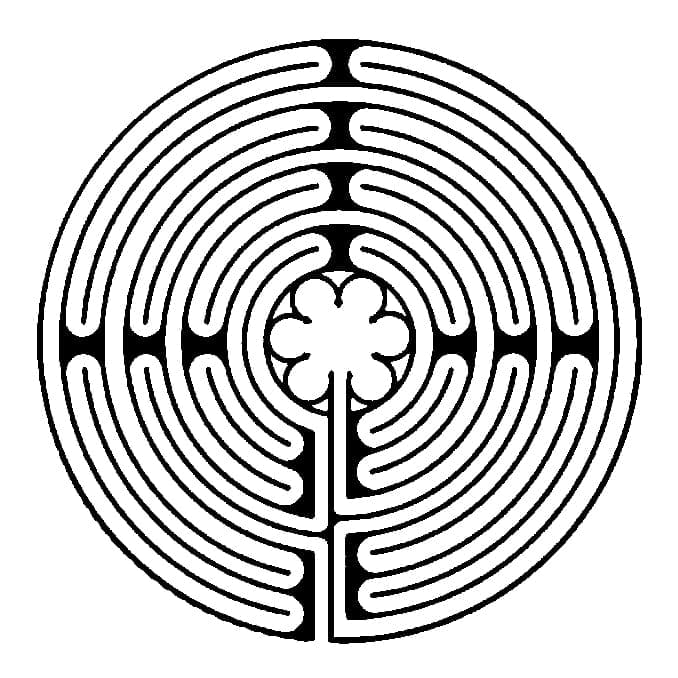
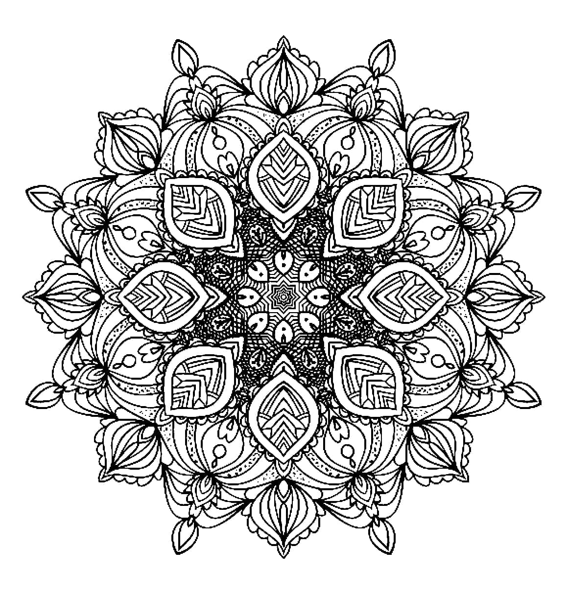
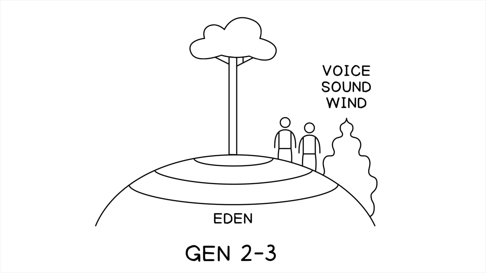
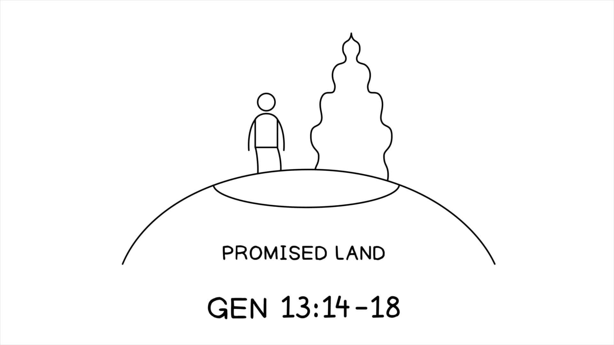
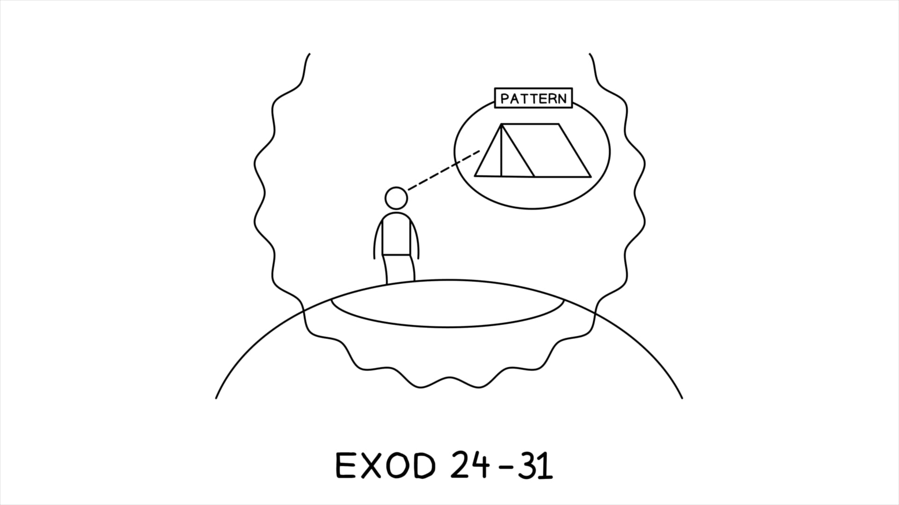
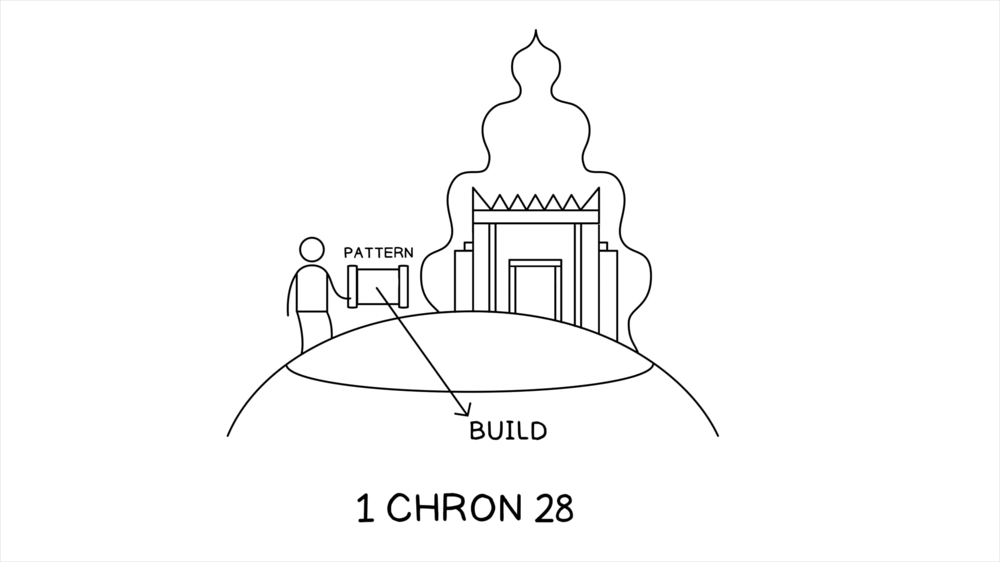
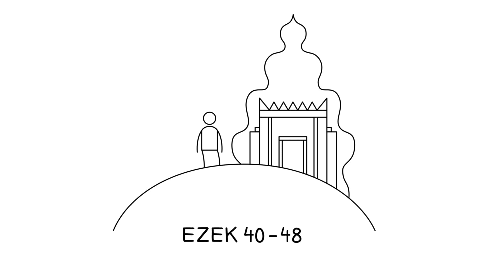

Duas analogias para nos ajudar a entender a visão do templo de Ezequiel.Two analogies to help us understand Ezekiel’s temple vision.
Primeiro, imagine um mapa atual dos Estados Unidos. Todas as linhas que compõem as fronteiras atuais dos estados são o resultado de um longo processo de aquisição de terras e representam séculos de interesses políticos, econômicos e sociais. Imagine um Ezequiel moderno, convencido de que, desde as suas origens, esse arranjo de espaço está fundamentado na ganância e na corrupção. A sua equivalente “visão americana” resultaria em um mapa de design perfeitamente simétrico e proporcional, de modo que cada estado recebesse a mesma quantidade de espaço, e todos os erros passados fossem corrigidos nesse novo arranjo. E, tão importante quanto isso, os centros de poder seriam todos reordenados, de forma que a catedral nacional fosse colocada no exato centro do continente, enquanto o Capitólio dos EUA e a Casa Branca fossem descentralizados e colocados em subordinação à catedral central. A visão seria uma forma não apenas de esperança futura, mas constituiria uma poderosa crítica ao passado e ao presente da América. Este é precisamente o propósito da visão de Ezequiel conforme declarado em 43:1-11.First, picture a current map of the United States. All the lines that make up the current state borders are the result of a long process of land acquisition and represent centuries of political, economic, and social interests. Imagine a modern-day Ezekiel, convinced that from its origins this arrangement of space is founded on greed and corruption. His equivalent “American vision” would result in a map of perfect symmetrical and proportionate design, so that each state received the same amount of space, and all past wrongs have been made right in this new arrangement. And, just as importantly, the centers of power would all be rearranged, so that the national cathedral would be placed at the exact center of the continent, while the U.S. Capitol and the White House would be de-centered and placed in subordination to the central cathedral. The vision would be a form not just of future hope, but it would constitute a powerful critique of America’s past and present. This is precisely the purpose of Ezekiel’s vision as stated in 43:1-11.
Segundo, considere os labirintos meditativos nas tradições cristã e budista. Há uma antiga tradição no misticismo cristão e na formação espiritual de caminhar fisicamente através de um labirinto de design simétrico enquanto se medita e ora. A experiência física de caminhar em simetrias corresponde a uma série de práticas de oração e meditação que auxiliam a girar a oração repetidamente, vendo-a de diferentes ângulos para que se possa ponderar e elevar essas musas à presença de Deus.Second, consider meditative labyrinths in the Christian and Buddhist traditions. There is an ancient tradition in Christian mysticism and spiritual formation of physically walking through a symmetrically designed labyrinth as one meditates and prays. The physical experience of walking in symmetries corresponds to a series of prayer and meditation practices that aid one in turning the prayer over and over again, seeing it from different angles so that one can ponder and raise these musings up to the presence of God.
De modo semelhante, Susan Niditch (em “Ezekiel 40-48 in Visionary Context”, p. 213) compara a visão de Ezequiel às mandalas dos visionários budistas. Uma mandala era um desenho simétrico que representava a ordem cósmica, e a meditação e a concentração sobre a mandala levavam a pessoa a imaginar-se viajando pelo universo, ponderando sua ordem, sua beleza e sua natureza divina.Similarly, Susan Niditch (in “Ezekiel 40-48 in Visionary Context,” p. 213), compares Ezekiel’s vision to the mandalas of Buddhist visionaries. A mandala was a symmetrical drawing that represented the cosmic order, and meditation and concentration on the mandala led one to imagine traveling about the universe pondering its order, beauty, and divine nature.
Labirinto de Oração. awfumc.orgPrayer Labyrinth. awfumc.org
Dummies.com (2023). “O que são Mandalas?”Dummies.com (2023). “What Are Mandalas?”







Que significado ou benefício leitores modernos podem derivar de longas descrições das dimensões do templo?What meaning or benefit can modern readers derive from lengthy descriptions of temple dimensions?